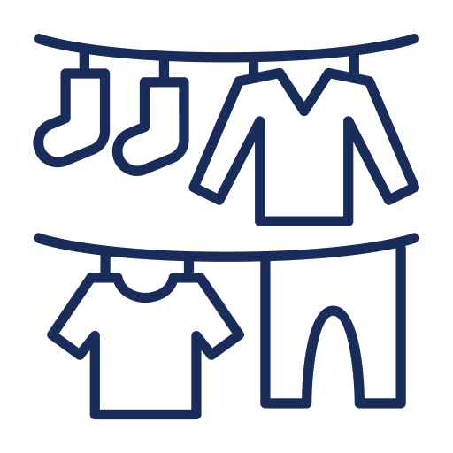

Wash, Dry, and Fold Service
Let our expert staff handle your laundry with care. Drop off your
dirty clothes, linens, and garments, and we'll wash, dry, fold, and
package them neatly for you. Our professionals use high-quality
detergents and machines to ensure your laundry comes out fresh and
clean every time.

Self-Service Laundry
For those who prefer a hands-on approach, our state-of-the-art
self-service area is equipped with modern washing machines and dryers.
Enjoy the ease of doing your laundry at your own pace while utilizing
our top-notch facilities. Our friendly staff is always available to
assist you if you need any help.
Pick-Up and Delivery Service:
Too busy to visit our laundromat? No worries! Sudz City Laundromat
offers convenient pick-up and delivery services. Schedule a pick-up,
and our team will collect your laundry from your doorstep. Once
cleaned, dried, and folded, we'll deliver your laundry back to you,
saving you time and effort.

Commercial Laundry Services:
Businesses and organizations can benefit from our efficient commercial
laundry services. Whether you run a hotel, restaurant, or any other
business requiring large-scale laundry solutions, Sudz City Laundromat
can handle your commercial laundry needs with professionalism and
expertise.

Wash and Dry Cleaning Services:
Delicate fabrics, intricate designs, and special garments require
extra care. Our wash and dry cleaning services ensure that your
valuable items are treated with the utmost attention. We use
specialized cleaning techniques to preserve the quality and longevity
of your clothing.
Stain Removal and Fabric Care:
Accidental spills and tough stains are no match for our stain removal
experts. We employ advanced techniques and eco-friendly products to
remove stubborn stains while preserving the integrity of your fabrics.
Trust us to handle your garments with care and precision.
Our Features
- Wash, Dry, & Fold
- Dry Cleaning
- Pressing
- Shoe Repair
- Free Wi-Fi
- Self Service
- High-Capacity Washers & Dryers
- Large, Well-Lit Free Parking
- Air Conditioned
- Snacks & Sodas Available
- Knowledgeable Attendants
- Brand Name Laundry Supplies
- Drop-off Laundry
- Bright, Comfortable & Clean
- Commercial Accounts
- Pricing
- Quality Services
- And more!
At Sudz City Laundromat, we understand the importance of clean, fresh
laundry in your daily life. That's why we offer a range of convenient
and reliable services to meet all your laundry needs. Whether you prefer
the flexibility of self-service or the convenience of our premium wash,
dry, and fold services, Sudz City Laundromat has you covered.
At Sudz City Laundromat, we take pride in delivering exceptional laundry
services tailored to your specific requirements. Our commitment to
quality, convenience, and customer satisfaction sets us apart.
Experience the difference with Sudz City Laundromat – where your laundry
is our priority.